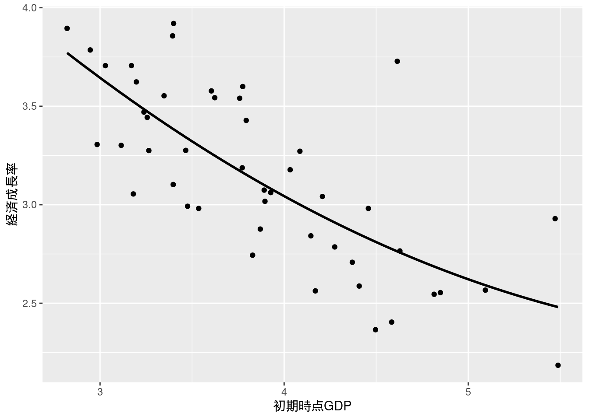

第5章 重回帰モデルの推定と検定
先に出版社サイトよりデータをダウンロードする.
# サポートファイルへのリンク
curl <- "https://www.yuhikaku.co.jp/static_files/05385_support05.zip"
# ダウンロード保存用フォルダが存在しない場合, 作成
if(!dir.exists("downloads")){
dir.create("downloads")
}
cdestfile <- "downloads/support05.zip"
download.file(curl, cdestfile)
# データ保存用フォルダが存在しない場合, 作成
if(!dir.exists("data")){
dir.create("data")
}
# WSL上のRで解凍すると文字化けするので、Linuxのコマンドを外部呼び出し
# Windowsの場合は別途コマンドを用いる.
if(.Platform$OS.type == "unix") {
system(sprintf('unzip -n -Ocp932 %s -d %s', "downloads/support05.zip", "./data"))
} else {
print("Windowsで解凍するコマンドを別途追加せよ.")
}必要なライブラリを読み込む.
library(tidyverse)
library(estimatr)
library(knitr)
library(modelsummary)
## `modelsummary` 2.0.0 now uses `tinytable` as its default table-drawing
## backend. Learn more at: https://vincentarelbundock.github.io/tinytable/
##
## Revert to `kableExtra` for one session:
##
## options(modelsummary_factory_default = 'kableExtra')
## options(modelsummary_factory_latex = 'kableExtra')
## options(modelsummary_factory_html = 'kableExtra')
##
## Silence this message forever:
##
## config_modelsummary(startup_message = FALSE)
library(gt)
library(car)
## Loading required package: carData
##
## Attaching package: 'car'
## The following object is masked from 'package:dplyr':
##
## recode
## The following object is masked from 'package:purrr':
##
## some
library(wooldridge)
library(haven)単回帰 (5.1), (5.2)
先にデータを読み込み, 変数を作成する.
youdou <- read.csv("data/05_第5章/youdou.csv")
youdou <- youdou %>%
mutate(lny80 = log(y80)) %>%
mutate(lny99 = log(y99)) %>%
mutate(lny90 = log(y90)) %>%
mutate(growthrate8099 = (lny99-lny80)/19*100) %>%
mutate(growthrate8090 = (lny90-lny80)/10)不均一分散に頑健な標準誤差を求めるために, estimatr::lm_robust()を使う.
youdou_51 <- lm_robust(growthrate8099 ~ trust80, data = youdou, se_type = "stata")
summary(youdou_51)
##
## Call:
## lm_robust(formula = growthrate8099 ~ trust80, data = youdou,
## se_type = "stata")
##
## Standard error type: HC1
##
## Coefficients:
## Estimate Std. Error t value Pr(>|t|) CI Lower CI Upper DF
## (Intercept) 3.1394 0.06044 51.943 8.188e-42 3.01763 3.2611 45
## trust80 0.2247 0.06640 3.384 1.491e-03 0.09094 0.3584 45
##
## Multiple R-squared: 0.179 , Adjusted R-squared: 0.1608
## F-statistic: 11.45 on 1 and 45 DF, p-value: 0.001491
youdou_52 <- lm_robust(growthrate8099 ~ norm80, data = youdou, se_type = "stata")
summary(youdou_52)
##
## Call:
## lm_robust(formula = growthrate8099 ~ norm80, data = youdou, se_type = "stata")
##
## Standard error type: HC1
##
## Coefficients:
## Estimate Std. Error t value Pr(>|t|) CI Lower CI Upper DF
## (Intercept) 3.0905 0.04826 64.033 7.544e-46 2.9933 3.1878 45
## norm80 0.5597 0.07058 7.931 4.348e-10 0.4176 0.7019 45
##
## Multiple R-squared: 0.4563 , Adjusted R-squared: 0.4442
## F-statistic: 62.9 on 1 and 45 DF, p-value: 4.348e-10実証例5.1 信頼と規範が経済成長に与える影響の重回帰分析
youdou_55 <- lm_robust(growthrate8099 ~ trust80 + education80 + lny80, data = youdou, se_type = "stata")
summary(youdou_55)
##
## Call:
## lm_robust(formula = growthrate8099 ~ trust80 + education80 +
## lny80, data = youdou, se_type = "stata")
##
## Standard error type: HC1
##
## Coefficients:
## Estimate Std. Error t value Pr(>|t|) CI Lower CI Upper DF
## (Intercept) 6.04885 0.42643 14.1849 8.041e-18 5.189 6.9088 43
## trust80 0.02058 0.07564 0.2721 7.868e-01 -0.132 0.1731 43
## education80 2.61208 2.70857 0.9644 3.403e-01 -2.850 8.0744 43
## lny80 -2.38309 0.49147 -4.8489 1.658e-05 -3.374 -1.3920 43
##
## Multiple R-squared: 0.5619 , Adjusted R-squared: 0.5313
## F-statistic: 20.21 on 3 and 43 DF, p-value: 2.531e-08
youdou_55_2 <- lm_robust(growthrate8099 ~ norm80 + education80 + lny80, data = youdou, se_type = "stata")
summary(youdou_55_2)
##
## Call:
## lm_robust(formula = growthrate8099 ~ norm80 + education80 + lny80,
## data = youdou, se_type = "stata")
##
## Standard error type: HC1
##
## Coefficients:
## Estimate Std. Error t value Pr(>|t|) CI Lower CI Upper DF
## (Intercept) 5.2909 0.6682 7.918 6.204e-10 3.94324 6.6385 43
## norm80 0.3383 0.1370 2.469 1.758e-02 0.06202 0.6145 43
## education80 4.3872 1.9611 2.237 3.051e-02 0.43233 8.3421 43
## lny80 -1.9911 0.5746 -3.465 1.213e-03 -3.14987 -0.8324 43
##
## Multiple R-squared: 0.6391 , Adjusted R-squared: 0.614
## F-statistic: 41.04 on 3 and 43 DF, p-value: 1.11e-12実証例5.2 FWL定理の確認
定数項なしの回帰を実行するには, formulaに+0か-1を追加する(参考). なお, estimatr::lm_robust()にはlmのようにresidualsがないため, 必要ならば手動で追加する(参考). ただしこの例では標準偏差は必要でないため, lmを用いた.
fwl_1 <- lm(trust80 ~ education80 + lny80, data = youdou)
summary(fwl_1)
##
## Call:
## lm(formula = trust80 ~ education80 + lny80, data = youdou)
##
## Residuals:
## Min 1Q Median 3Q Max
## -1.18774 -0.48567 -0.02193 0.56490 1.41091
##
## Coefficients:
## Estimate Std. Error t value Pr(>|t|)
## (Intercept) 2.6740 0.9493 2.817 0.00723 **
## education80 -11.2886 4.5080 -2.504 0.01606 *
## lny80 -1.0254 0.9692 -1.058 0.29584
## ---
## Signif. codes: 0 '***' 0.001 '**' 0.01 '*' 0.05 '.' 0.1 ' ' 1
##
## Residual standard error: 0.6555 on 44 degrees of freedom
## Multiple R-squared: 0.4246, Adjusted R-squared: 0.3985
## F-statistic: 16.24 on 2 and 44 DF, p-value: 5.233e-06
fwl_2 <- lm(growthrate8099 ~ education80 + lny80, data = youdou)
summary(fwl_2)
##
## Call:
## lm(formula = growthrate8099 ~ education80 + lny80, data = youdou)
##
## Residuals:
## Min 1Q Median 3Q Max
## -0.46861 -0.23426 0.00308 0.13266 1.01937
##
## Coefficients:
## Estimate Std. Error t value Pr(>|t|)
## (Intercept) 6.1039 0.4403 13.863 < 2e-16 ***
## education80 2.3797 2.0909 1.138 0.261
## lny80 -2.4042 0.4495 -5.348 3.03e-06 ***
## ---
## Signif. codes: 0 '***' 0.001 '**' 0.01 '*' 0.05 '.' 0.1 ' ' 1
##
## Residual standard error: 0.304 on 44 degrees of freedom
## Multiple R-squared: 0.561, Adjusted R-squared: 0.5411
## F-statistic: 28.12 on 2 and 44 DF, p-value: 1.36e-08
lm(fwl_2$residuals ~ 0 + fwl_1$residuals) %>% summary()
##
## Call:
## lm(formula = fwl_2$residuals ~ 0 + fwl_1$residuals)
##
## Residuals:
## Min 1Q Median 3Q Max
## -0.45839 -0.21925 -0.00947 0.13042 1.03231
##
## Coefficients:
## Estimate Std. Error t value Pr(>|t|)
## fwl_1$residuals 0.02058 0.06832 0.301 0.765
##
## Residual standard error: 0.2971 on 46 degrees of freedom
## Multiple R-squared: 0.00197, Adjusted R-squared: -0.01973
## F-statistic: 0.09078 on 1 and 46 DF, p-value: 0.7645実証例5.3 FWL定理の別表現の確認
lm(growthrate8099 ~ fwl_1$residuals-1, data = youdou) %>% summary()
##
## Call:
## lm(formula = growthrate8099 ~ fwl_1$residuals - 1, data = youdou)
##
## Residuals:
## Min 1Q Median 3Q Max
## 2.189 2.816 3.086 3.546 3.915
##
## Coefficients:
## Estimate Std. Error t value Pr(>|t|)
## fwl_1$residuals 0.02058 0.73877 0.028 0.978
##
## Residual standard error: 3.212 on 46 degrees of freedom
## Multiple R-squared: 1.688e-05, Adjusted R-squared: -0.02172
## F-statistic: 0.0007764 on 1 and 46 DF, p-value: 0.9779実証例5.4 信頼と規範が経済成長に与える影響の重回帰分析の標準誤差
実証例5.1を参照せよ.
実証例5.5 信頼と規範が経済成長に与える影響の多項式モデル
youdou_515 <- lm_robust(growthrate8099 ~ y80 + I(y80^2), data = youdou, se_type = "stata")
summary(youdou_515)
##
## Call:
## lm_robust(formula = growthrate8099 ~ y80 + I(y80^2), data = youdou,
## se_type = "stata")
##
## Standard error type: HC1
##
## Coefficients:
## Estimate Std. Error t value Pr(>|t|) CI Lower CI Upper DF
## (Intercept) 6.51866 1.38538 4.705 2.535e-05 3.72662 9.3107 44
## y80 -1.22615 0.70791 -1.732 9.027e-02 -2.65285 0.2005 44
## I(y80^2) 0.08935 0.08861 1.008 3.188e-01 -0.08923 0.2679 44
##
## Multiple R-squared: 0.5503 , Adjusted R-squared: 0.5299
## F-statistic: 27.39 on 2 and 44 DF, p-value: 1.879e-08図5-1 散布図と推定された回帰曲線
youdou %>%
ggplot(aes(x = y80, y = growthrate8099)) +
geom_point() +
xlab("初期時点GDP") +
ylab("経済成長率") +
geom_smooth(method = "lm", formula = y ~ x + I(x^2), se = FALSE, color = "black")
例題5.5
lm_robust(growthrate8099 ~ lny80 * education80, data = youdou, se_type = "stata") %>% summary()
##
## Call:
## lm_robust(formula = growthrate8099 ~ lny80 * education80, data = youdou,
## se_type = "stata")
##
## Standard error type: HC1
##
## Coefficients:
## Estimate Std. Error t value Pr(>|t|) CI Lower CI Upper DF
## (Intercept) 6.0868 1.1220 5.42485 2.492e-06 3.824 8.3496 43
## lny80 -2.3937 0.8477 -2.82364 7.167e-03 -4.103 -0.6841 43
## education80 2.5735 11.0413 0.23308 8.168e-01 -19.693 24.8405 43
## lny80:education80 -0.1211 7.1314 -0.01698 9.865e-01 -14.503 14.2608 43
##
## Multiple R-squared: 0.561 , Adjusted R-squared: 0.5304
## F-statistic: 18.45 on 3 and 43 DF, p-value: 7.651e-08実証例5.6 都市化の度合いと初期時点GDPの交互作用
先にダミー変数urbanを作成してから回帰分析を実行する(下ではurbanの型はintではなくboolになるが構わない). urbanの値により標本を分ける場合は, lm()のdataでfilter()を使えばよい.
youdou <- youdou %>%
mutate(urban = did > 0.4)
lm(growthrate8099 ~ urban * lny80, data = youdou) %>% summary()
##
## Call:
## lm(formula = growthrate8099 ~ urban * lny80, data = youdou)
##
## Residuals:
## Min 1Q Median 3Q Max
## -0.51040 -0.21003 -0.02406 0.16516 0.90189
##
## Coefficients:
## Estimate Std. Error t value Pr(>|t|)
## (Intercept) 5.74905 0.57763 9.953 9.96e-13 ***
## urbanTRUE -0.17551 0.82444 -0.213 0.832421
## lny80 -1.91120 0.45104 -4.237 0.000117 ***
## urbanTRUE:lny80 0.06441 0.61108 0.105 0.916546
## ---
## Signif. codes: 0 '***' 0.001 '**' 0.01 '*' 0.05 '.' 0.1 ' ' 1
##
## Residual standard error: 0.3092 on 43 degrees of freedom
## Multiple R-squared: 0.5564, Adjusted R-squared: 0.5254
## F-statistic: 17.98 on 3 and 43 DF, p-value: 1.041e-07
lm(growthrate8099 ~ lny80, data = (youdou %>% filter(!urban))) %>% summary()
##
## Call:
## lm(formula = growthrate8099 ~ lny80, data = (youdou %>% filter(!urban)))
##
## Residuals:
## Min 1Q Median 3Q Max
## -0.51040 -0.22240 -0.02406 0.12827 0.90189
##
## Coefficients:
## Estimate Std. Error t value Pr(>|t|)
## (Intercept) 5.7491 0.6512 8.829 7.59e-09 ***
## lny80 -1.9112 0.5085 -3.759 0.00102 **
## ---
## Signif. codes: 0 '***' 0.001 '**' 0.01 '*' 0.05 '.' 0.1 ' ' 1
##
## Residual standard error: 0.3486 on 23 degrees of freedom
## Multiple R-squared: 0.3805, Adjusted R-squared: 0.3536
## F-statistic: 14.13 on 1 and 23 DF, p-value: 0.001022
lm(growthrate8099 ~ lny80, data = (youdou %>% filter(urban))) %>% summary()
##
## Call:
## lm(formula = growthrate8099 ~ lny80, data = (youdou %>% filter(urban)))
##
## Residuals:
## Min 1Q Median 3Q Max
## -0.35740 -0.19171 -0.05236 0.17634 0.49475
##
## Coefficients:
## Estimate Std. Error t value Pr(>|t|)
## (Intercept) 5.5735 0.4881 11.419 3.25e-10 ***
## lny80 -1.8468 0.3421 -5.399 2.77e-05 ***
## ---
## Signif. codes: 0 '***' 0.001 '**' 0.01 '*' 0.05 '.' 0.1 ' ' 1
##
## Residual standard error: 0.2565 on 20 degrees of freedom
## Multiple R-squared: 0.593, Adjusted R-squared: 0.5727
## F-statistic: 29.14 on 1 and 20 DF, p-value: 2.769e-05実証例5.7 都市化の度合いと初期時点GDPのダミー変数同士の交互作用
やはり, 先にダミー変数lny80dを作成する.
youdou <- youdou %>%
mutate(lny80d = lny80 > 1.4)
lm(growthrate8099 ~ urban * lny80d, data = youdou) %>% summary()
##
## Call:
## lm(formula = growthrate8099 ~ urban * lny80d, data = youdou)
##
## Residuals:
## Min 1Q Median 3Q Max
## -0.50919 -0.25376 -0.01148 0.24475 0.85353
##
## Coefficients:
## Estimate Std. Error t value Pr(>|t|)
## (Intercept) 3.45474 0.07544 45.793 < 2e-16 ***
## urbanTRUE -0.23329 0.12459 -1.872 0.067953 .
## lny80dTRUE -0.58003 0.15400 -3.767 0.000498 ***
## urbanTRUE:lny80dTRUE 0.04725 0.20827 0.227 0.821596
## ---
## Signif. codes: 0 '***' 0.001 '**' 0.01 '*' 0.05 '.' 0.1 ' ' 1
##
## Residual standard error: 0.3288 on 43 degrees of freedom
## Multiple R-squared: 0.4982, Adjusted R-squared: 0.4631
## F-statistic: 14.23 on 3 and 43 DF, p-value: 1.401e-06実証例5.8 非線形モデルにおける結合仮説の検定
実証例5.5を参照せよ.
実証例5.9 ポンフェローニ検定
式は実証例5.1を参照せよ. 規範と教育水準の係数が両方とも0であるという帰無仮説を検定する. F検定統計値はcar::linearHypothesis()を使うことで求められる.
linearHypothesis(youdou_55_2, c("norm80","education80"), test = "F")
##
## Linear hypothesis test:
## norm80 = 0
## education80 = 0
##
## Model 1: restricted model
## Model 2: growthrate8099 ~ norm80 + education80 + lny80
##
## Res.Df Df F Pr(>F)
## 1 45
## 2 43 2 5.4375 0.007848 **
## ---
## Signif. codes: 0 '***' 0.001 '**' 0.01 '*' 0.05 '.' 0.1 ' ' 1表5-5 記述統計量
modelsummary::datasummary()を使うことで簡単に記述統計表が作成できる. ここでは統計量と変数名の表示を日本語に直すため, 一旦dataframeで書き出し, 再度gtで修正した表を表示している.
# 変数を選択
vars <- youdou %>%
select(growthrate8099, trust80, norm80, education80, lny80)
table55 <- datasummary(All(vars) ~ N + Mean + SD + Min + Max,
data = youdou,
output = "data.frame",
fmt = 3)
# 列名
colnames(table55) <- c("変数", "サンプルサイズ", "平均", "標準偏差", "最小値", "最大値")
# 変数名
table55[,1] <- c("経済成長率", "信頼", "規範", "教育水準", "初期時点対数GDP")
# 表を出力
gt(table55)| 変数 | サンプルサイズ | 平均 | 標準偏差 | 最小値 | 最大値 |
|---|---|---|---|---|---|
| 経済成長率 | 47 | 3.147 | 0.449 | 2.185 | 3.920 |
| 信頼 | 47 | 0.033 | 0.845 | -1.668 | 1.918 |
| 規範 | 47 | 0.101 | 0.542 | -1.248 | 1.297 |
| 教育水準 | 47 | 0.112 | 0.036 | 0.069 | 0.238 |
| 初期時点対数GDP | 47 | 1.341 | 0.167 | 1.037 | 1.703 |
表5-6 推定結果: 被説明変数は経済成長率
回帰結果の表はmodelsummaryを使う (stargazerでも可能だが更新が止まっており, estimatrの結果を表示できないなどデメリットがある). modelsummary::msummary()のgoef_omitで表示しない統計量を指定できるが, これは正規表現を使っているため, 自由度修正済み決定係数\(\bar{R}^2\)を表示し, 通常の決定係数\(R^2\)を表示させないためにはR2$とすればよい. F検定統計量の値を表示するにあたっては, このサイトを参考にした.
models <- list(
"(1)" = lm_robust(growthrate8099 ~ trust80, data = youdou, se_type = "stata"),
"(2)" = lm_robust(growthrate8099 ~ norm80, data = youdou, se_type = "stata"),
"(3)" = lm_robust(growthrate8099 ~ trust80 + norm80, data = youdou, se_type = "stata"),
"(4)" = lm_robust(growthrate8099 ~ trust80 + lny80 + education80, data = youdou, se_type = "stata"),
"(5)" = lm_robust(growthrate8099 ~ norm80 + lny80 + education80, data = youdou, se_type = "stata"),
"(6)" = lm_robust(growthrate8099 ~ trust80 + norm80 + lny80 + education80, data = youdou, se_type = "stata"))
# F検定統計量の値を表示するモデルを指定
attr(models[3]$`(3)`, "FTEST") <- TRUE
attr(models[6]$`(6)`, "FTEST") <- TRUE
glance_custom.lm_robust <- function(x) {
# 上で指定した, F検定統計量の値を表示したいモデルでなければパス
if (!isTRUE(attr(x, "FTEST"))) return(NULL)
# F検定を実行
ftest <- linearHypothesis(x, test = "F", c("trust80", "norm80"))
# F検定統計量の値とp値をまとめたtibbleを作成
out <- tibble(
"F検定統計量の値 $H_0: \\beta_{信頼}=0, \\beta_{規範}=0$" = ftest[["F"]][2],
" " = sprintf("(%.3f)", ftest[["Pr(>F)"]][2]))
return(out)
}
gm <- tribble(
~raw, ~clean, ~fmt,
"F検定統計量の値 $H_0: \\beta_{信頼}=0, \\beta_{規範}=0$", "F検定統計量の値 $H_0: \\beta_{信頼}=0, \\beta_{規範}=0$", 3,
" ", " ", 3,
"adj.r.squared", "$\\bar{R}^2$", 3,
"nobs", "サンプルサイズ", 0)
cm <- c("trust80" = "信頼", "norm80" = "規範", "lny80" = "初期時点対数GDP", "education80" = "教育水準", "(Intercept)" = "定数項")
msummary(models,
stars = c("*" = 0.05, "**" = 0.01, "***" = 0.001),
gof_omit='R2$|RMSE|AIC|BIC|Log.Lik.',
gof_map = gm,
coef_map = cm,
output = "kableExtra",
estimate = "{estimate}{stars}",
notes = "* p < 0.05, ** p < 0.01, *** p < 0.001") %>%
row_spec(c(0, 12, 14), extra_css = "border-bottom: 1.5px solid") %>%
row_spec(10, extra_css = ";border-bottom: 1.5px solid") # 32行目の下 (estimateとstatisticsの境) のみコロンが必要| (1) | (2) | (3) | (4) | (5) | (6) | |
|---|---|---|---|---|---|---|
| 信頼 | 0.225** | 0.036 | 0.021 | −0.012 | ||
| (0.066) | (0.082) | (0.076) | (0.081) | |||
| 規範 | 0.560*** | 0.529*** | 0.338* | 0.342* | ||
| (0.071) | (0.102) | (0.137) | (0.148) | |||
| 初期時点対数GDP | −2.383*** | −1.991** | −1.999*** | |||
| (0.491) | (0.575) | (0.556) | ||||
| 教育水準 | 2.612 | 4.387* | 4.270 | |||
| (2.709) | (1.961) | (2.237) | ||||
| 定数項 | 3.139*** | 3.091*** | 3.092*** | 6.049*** | 5.291*** | 5.315*** |
| (0.060) | (0.048) | (0.048) | (0.426) | (0.668) | (0.603) | |
| F検定統計量の値 \(H_0: \beta_{信頼}=0, \beta_{規範}=0\) | 29.874 | 3.460 | ||||
| (0.000) | (0.041) | |||||
| \(\bar{R}^2\) | 0.161 | 0.444 | 0.435 | 0.531 | 0.614 | 0.605 |
| サンプルサイズ | 47 | 47 | 47 | 47 | 47 | 47 |
| * p < 0.05, ** p < 0.01, *** p < 0.001 |
F検定統計量の星の表示は, 手動で追加する必要があると思われるので, 一旦省略とする.
表5-7 推定結果
サポートサイトにはデータはないが, Rではwooldridgeパッケージにまとめられているデータattendを用いることができる.
data('attend')
models_57 <- list(
"(1)" = lm_robust(stndfnl ~ atndrte + frosh + soph, data = attend, se_type = "stata"),
"(2)" = lm_robust(stndfnl ~ atndrte + priGPA + ACT + frosh + soph, data = attend, se_type = "stata"),
"(3)" = lm_robust(stndfnl ~ atndrte * priGPA + ACT + frosh + soph, data = attend, se_type = "stata"),
"(4)" = lm_robust(stndfnl ~ atndrte + priGPA + I(priGPA^2) + ACT + I(ACT^2) + frosh + soph, data = attend, se_type = "stata"),
"(5)" = lm_robust(stndfnl ~ atndrte * priGPA + atndrte * I(priGPA^2) + ACT + I(ACT^2) + frosh + soph, data = attend, se_type = "stata"))
cm <- c("atndrte" = "出席割合",
"priGPA" = "前学期までのGPA",
"I(priGPA^2)" = "前学期までのGPA$^2$",
"atndrte:priGPA" = "出席割合 $\\times$ 前学期までのGPA",
"atndrte:I(priGPA^2)" = "出席割合 $\\times$ 前学期までのGPA$^2$",
"ACT" = "ACT",
"I(ACT^2)" = "ACT$^2$",
"frosh" = "1年生",
"soph" = "2年生",
"(Intercept)" = "定数項")
gm <- tribble(
~raw, ~clean, ~fmt,
"adj.r.squared", "$\\bar{R}^2$", 2,
"nobs", "サンプルサイズ", 0)
# 丸め関数を定義
custom_format <- function(values) {
formatted_values <- ifelse(values < 1,
signif(values, digits=2),
round(values, digits=2))
return(formatted_values)
}
# なぜか定数項だけ丸めがおかしい?
msummary(models_57,
stars = c("*" = 0.05, "**" = 0.01, "***" = 0.001),
gof_omit='R2$|RMSE|AIC|BIC|Log.Lik.',
coef_map = cm,
gof_map = gm,
estimate = "{estimate}{stars}",
output = "kableExtra",
notes = "* p < 0.05, ** p < 0.01, *** p < 0.001",
fmt = custom_format) %>%
row_spec(c(0, 22), extra_css = "border-bottom: 1.5px solid") %>%
row_spec(20, extra_css = ";border-bottom: 1.5px solid") # 20行目の下 (estimateとstatisticsの境) のみコロンが必要| (1) | (2) | (3) | (4) | (5) | |
|---|---|---|---|---|---|
| 出席割合 | 0.0082*** | 0.0052* | −0.022* | 0.0062** | 0.065* |
| (0.0021) | (0.0024) | (0.0088) | (0.0023) | (0.032) | |
| 前学期までのGPA | 0.43*** | −0.56 | −1.5** | 3.63 | |
| (0.086) | (0.32) | (0.49) | (2.21) | ||
| 前学期までのGPA\(^2\) | 0.37*** | −0.82 | |||
| (0.09) | (0.45) | ||||
| 出席割合 \(\times\) 前学期までのGPA | 0.012** | −0.057* | |||
| (0.0037) | (0.026) | ||||
| 出席割合 \(\times\) 前学期までのGPA\(^2\) | 0.013* | ||||
| (0.0052) | |||||
| ACT | 0.084*** | 0.082*** | −0.11 | −0.11 | |
| (0.011) | (0.011) | (0.1) | (0.1) | ||
| ACT\(^2\) | 0.0042 | 0.0042 | |||
| (0.0023) | (0.0022) | ||||
| 1年生 | −0.29* | −0.049 | −0.063 | −0.11 | −0.1 |
| (0.11) | (0.11) | (0.1) | (0.1) | (0.1) | |
| 2年生 | −0.12 | −0.16 | −0.17 | −0.18* | −0.19* |
| (0.1) | (0.089) | (0.088) | (0.087) | (0.086) | |
| 定数項 | −0.5** | −3.3*** | −1 | 1.38 | −3.9 |
| (0.18) | (0.3) | (0.76) | (1.24) | (2.95) | |
| \(\bar{R}^2\) | 0.02 | 0.20 | 0.21 | 0.22 | 0.23 |
| サンプルサイズ | 680 | 680 | 680 | 680 | 680 |
| * p < 0.05, ** p < 0.01, *** p < 0.001 |
F検定統計量の表への記載は省略とし, 下に検定結果を示す.
linearHypothesis(models_57[3]$`(3)`, test = "F", c("atndrte", "atndrte:priGPA"))
##
## Linear hypothesis test:
## atndrte = 0
## atndrte:priGPA = 0
##
## Model 1: restricted model
## Model 2: stndfnl ~ atndrte * priGPA + ACT + frosh + soph
##
## Res.Df Df F Pr(>F)
## 1 675
## 2 673 2 7.8085 0.0004442 ***
## ---
## Signif. codes: 0 '***' 0.001 '**' 0.01 '*' 0.05 '.' 0.1 ' ' 1
linearHypothesis(models_57[4]$`(4)`, test = "F", c("I(priGPA^2)", "I(ACT^2)"))
##
## Linear hypothesis test:
## I(priGPA^2) = 0
## I(ACT^2) = 0
##
## Model 1: restricted model
## Model 2: stndfnl ~ atndrte + priGPA + I(priGPA^2) + ACT + I(ACT^2) + frosh +
## soph
##
## Res.Df Df F Pr(>F)
## 1 674
## 2 672 2 11.772 9.438e-06 ***
## ---
## Signif. codes: 0 '***' 0.001 '**' 0.01 '*' 0.05 '.' 0.1 ' ' 1
linearHypothesis(models_57[5]$`(5)`, test = "F", c("atndrte", "atndrte:priGPA", "atndrte:I(priGPA^2)"))
##
## Linear hypothesis test:
## atndrte = 0
## atndrte:priGPA = 0
## atndrte:I(priGPA^2) = 0
##
## Model 1: restricted model
## Model 2: stndfnl ~ atndrte * priGPA + atndrte * I(priGPA^2) + ACT + I(ACT^2) +
## frosh + soph
##
## Res.Df Df F Pr(>F)
## 1 673
## 2 670 3 6.2543 0.0003437 ***
## ---
## Signif. codes: 0 '***' 0.001 '**' 0.01 '*' 0.05 '.' 0.1 ' ' 1
linearHypothesis(models_57[5]$`(5)`, test = "F", c("I(priGPA^2)", "atndrte:I(priGPA^2)", "I(ACT^2)"))
##
## Linear hypothesis test:
## I(priGPA^2) = 0
## atndrte:I(priGPA^2) = 0
## I(ACT^2) = 0
##
## Model 1: restricted model
## Model 2: stndfnl ~ atndrte * priGPA + atndrte * I(priGPA^2) + ACT + I(ACT^2) +
## frosh + soph
##
## Res.Df Df F Pr(>F)
## 1 673
## 2 670 3 7.5692 5.521e-05 ***
## ---
## Signif. codes: 0 '***' 0.001 '**' 0.01 '*' 0.05 '.' 0.1 ' ' 1
linearHypothesis(models_57[5]$`(5)`, test = "F", c("atndrte:priGPA", "atndrte:I(priGPA^2)"))
##
## Linear hypothesis test:
## atndrte:priGPA = 0
## atndrte:I(priGPA^2) = 0
##
## Model 1: restricted model
## Model 2: stndfnl ~ atndrte * priGPA + atndrte * I(priGPA^2) + ACT + I(ACT^2) +
## frosh + soph
##
## Res.Df Df F Pr(>F)
## 1 672
## 2 670 2 5.1942 0.005774 **
## ---
## Signif. codes: 0 '***' 0.001 '**' 0.01 '*' 0.05 '.' 0.1 ' ' 1練習問題 5-14 [実証]
表5-6を参照せよ.
自由度修正済み決定係数\(\bar{R}^2\)は以下のように定義される (p.158).
\[\bar{R}^2 = 1 - \frac{N-1}{N-k-1}\frac{\sum_{i=1}^N\hat{u}_i^2}{\sum_{i=1}^N(Y_i-\bar{Y}^2)}\].
これを決定係数\(R^2\)の定義と比べると, 自由度修正済み決定係数は変数の数\(k\)が増えるたびに値が小さくなることがわかる. 決定係数\(R^2\)ではこのようなことは起きず, 変数の数を増やすと\(R^2\)の値は必ず変わらないか大きくなり, 小さくなることはない.
- 問題文の指示の通り回帰分析を実行する. 1つめの方法では標準偏差の値は一致しないが, 2つ目の方法では一致することが確認できる.
practice514c_1 <- lm(trust80 ~ norm80, data = youdou)
practice514c_2 <- lm_robust(growthrate8099 ~ 0 + practice514c_1$residuals, data = youdou, se_type = "stata")
summary(practice514c_2)$coefficients
## Estimate Std. Error t value Pr(>|t|) CI Lower
## practice514c_1$residuals 0.0358709 0.7030377 0.05102272 0.9595283 -1.379271
## CI Upper DF
## practice514c_1$residuals 1.451012 46
practice514c_3 <- lm(growthrate8099 ~ norm80, data = youdou)
practice514c_4 <- lm(trust80 ~ 0 + norm80, data = youdou)
practice514c_5 <- lm_robust(practice514c_3$residuals ~ 0 + practice514c_4$residuals, se_type = "stata")
summary(practice514c_5)$coefficients
## Estimate Std. Error t value Pr(>|t|) CI Lower
## practice514c_4$residuals 0.03566014 0.08075573 0.4415803 0.6608618 -0.1268927
## CI Upper DF
## practice514c_4$residuals 0.198213 46練習問題 5-15 [実証]
データはStataで用いられる.dta形式になっているが, これをRで読み込むにはhaven::read_dta()を使う.
practice5_15_a <- lm_robust(mathscore ~ agese_q2 + agese_q3 + agese_q4, data = timss, se_type = "stata")
practice5_15_c <- lm_robust(mathscore ~ gender*agese_q2 + gender*agese_q3 + gender*agese_q4, data = timss, se_type = "stata")
practice5_15_d <- lm_robust(mathscore ~ agese_q2 + agese_q3 + agese_q4 + comu_1 + comu_2 + comu_3 + comu_4 + comu_5 + computer + numpeople + mothereduc_1 + mothereduc_2 + mothereduc_3 + mothereduc_4 + mothereduc_5 + fathereduc_1 + fathereduc_2 + fathereduc_3 + fathereduc_4 + fathereduc_5, data = timss, se_type = "stata")
practice5_15_ea <- lm_robust(sciencescore ~ agese_q2 + agese_q3 + agese_q4, data = timss, se_type = "stata")
practice5_15_ec <- lm_robust(sciencescore ~ gender*agese_q2 + gender*agese_q3 + gender*agese_q4, data = timss, se_type = "stata")
practice5_15_ed <- lm_robust(sciencescore ~ agese_q2 + agese_q3 + agese_q4 + comu_1 + comu_2 + comu_3 + comu_4 + comu_5 + computer + numpeople + mothereduc_1 + mothereduc_2 + mothereduc_3 + mothereduc_4 + mothereduc_5 + fathereduc_1 + fathereduc_2 + fathereduc_3 + fathereduc_4 + fathereduc_5, data = timss, se_type = "stata")結果をmodelsummaryで表にまとめる. (d)で用いるダミー変数はcoef_mapで指定して表示を省略している.
models_5_15 <- list()
models_5_15[['a']] <- practice5_15_a
models_5_15[['c']] <- practice5_15_c
models_5_15[['d']] <- practice5_15_d
models_5_15[['ea']] <- practice5_15_ea
models_5_15[['ec']] <- practice5_15_ec
models_5_15[['ed']] <- practice5_15_ed
cm <- c("agese_q2",
"agese_q3",
"agese_q4",
"gender",
"gender:agese_q2",
"gender:agese_q3",
"gender:agese_q4",
"(Intercept)")
gm <- tribble(
~raw, ~clean, ~fmt,
"adj.r.squared", "$\\bar{R}^2$", 2,
"nobs", "サンプルサイズ", 0)
msummary(models_5_15,
coef_map = cm,
gof_map = gm,
stars = c("*" = 0.05, "**" = 0.01, "***" = 0.001),
estimate = "{estimate}{stars}",
output = "kableExtra",
notes = "* p < 0.05, ** p < 0.01, *** p < 0.001") %>%
row_spec(c(0, 18), extra_css = "border-bottom: 1.5px solid") %>%
row_spec(16, extra_css = ";border-bottom: 1.5px solid") # 16行目の下 (estimateとstatisticsの境) のみコロンが必要| a | c | d | ea | ec | ed | |
|---|---|---|---|---|---|---|
| agese_q2 | 0.174 | −0.500 | 0.218 | 0.261 | 0.006 | 0.317 |
| (0.412) | (1.282) | (0.394) | (0.420) | (1.302) | (0.406) | |
| agese_q3 | −0.346 | −1.516 | −0.460 | −0.543 | −1.274 | −0.614 |
| (0.415) | (1.291) | (0.395) | (0.419) | (1.274) | (0.406) | |
| agese_q4 | −1.558*** | −2.935* | −1.336*** | −1.717*** | −1.963 | −1.522*** |
| (0.419) | (1.289) | (0.403) | (0.428) | (1.312) | (0.413) | |
| gender | −0.137 | 1.031 | ||||
| (0.586) | (0.611) | |||||
| gender:agese_q2 | 0.445 | 0.147 | ||||
| (0.824) | (0.840) | |||||
| gender:agese_q3 | 0.783 | 0.487 | ||||
| (0.830) | (0.839) | |||||
| gender:agese_q4 | 0.920 | 0.160 | ||||
| (0.839) | (0.856) | |||||
| (Intercept) | 150.363*** | 150.568*** | 146.798*** | 150.453*** | 148.915*** | 150.811*** |
| (0.293) | (0.908) | (2.392) | (0.305) | (0.923) | (1.884) | |
| \(\bar{R}^2\) | 0.00 | 0.00 | 0.09 | 0.00 | 0.01 | 0.07 |
| サンプルサイズ | 4536 | 4536 | 4536 | 4536 | 4536 | 4536 |
| * p < 0.05, ** p < 0.01, *** p < 0.001 |
上の表のa式を見ると,
agese_q4の係数は有意に負であることがわかる. つまり, この結果では早生まれの人の成績は4月から6月に生まれた人に比べて低いといえる.生まれた四半期のダミー変数を4つすべて含むと, ダミー変数の罠に陥る. 4月から6月に生まれた人を表すダミー変数を使用する場合, 定数項なしの回帰を行うことでダミー変数の罠を避けられる. 4月から6月に生まれた人, 早生まれの人を表すダミー変数の係数をそれぞれ\(\beta_{Q1}, \beta_{Q4}\)とおくと, 帰無仮説は\(H_0: \beta_{Q4} < \beta_{Q1}\)とすればよい.
上の表のc式を見ると,
genderとそれを含む交差項の係数はみな有意とは言えない. つまり, 早生まれの人の成績差に性別は関係がみられなかったとわかる.上の表のd式を見ると, やはり
agese_q4の係数は有意に負であることがわかる (表ではダミー変数の結果は省略している).対応するモデルを上の表のea, ec, ed式に示す. ea, ed式においては
agese_q4の係数はやはり有意に負であり,その大きさは数学に比べてわずかに大きい.